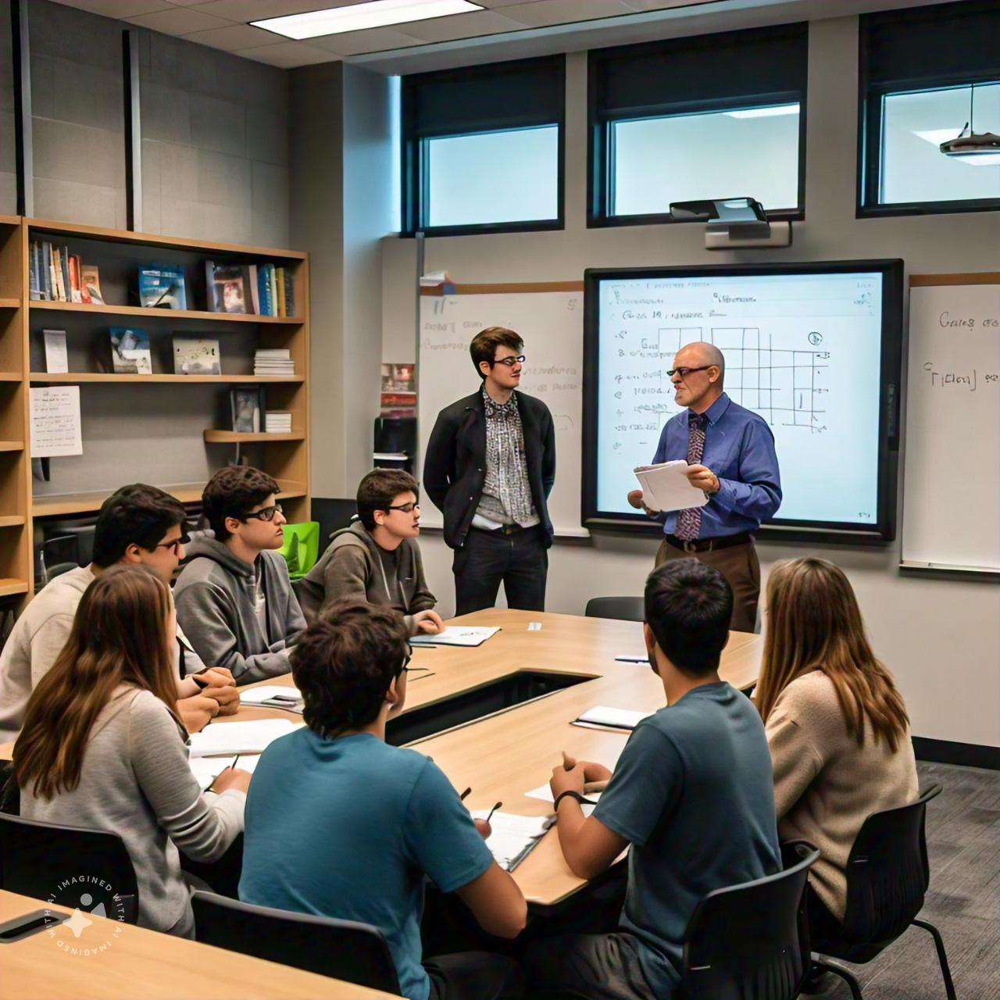

Adquisición y Procesamiento de Señales Biomédicas en Tecnologías de Borde
Ingeniería Biomédica
2025-01-20
Adquisición y Procesamiento de Señales Biomédicas en Tecnologías de Borde - APSB
El Profesor
Educación
Doctor en Ciencias de la Electrónica. Magister en Ingeniería Electrónica y Telecomunicaciones Ingeniero en Electrónica y Telecomunicaciones
Intereses
Procesamiento de Imágenes, Dispositivos para el análisis de movimiento humano, ciencia de los datos, IA.
Desempeño
Profesor del Centro de Estudios en Biomédica y Biotecnogía
Profesor en la línea de Procesmiento de Señales e Imágenes
Contacto:
pablo.caicedo@escuelaing.edu.co
Contenido del curso
- Introducción a inteligencia artificial en el borde (EDGE AI).
- Hardware y software para EDGE AI.
- El flujo de trabajo de EDGE AI.
- Diseño, desarrollo y evaluación de sistemas EDGE AI.
Estrategías de Aprendizaje
- Clases magistrales
- Desarrollo de ejercicios en clase
- Prácticas de laboratorio, donde se utilizarán herramientas computacionales y se aplicarán conocimientos y destrezas adquiridas en otros cursos
- Lecturas de la temática a tratar, previas a las clases magistrales
- Lecturas de artículos científicos de interés para el área de procesamiento de señales e imágenes
- Desarrollo de talleres fuera de la clase
- Proyecto práctico de fin de curso
Evaluación
- Laboratorios (60%)
- Proyecto Final (40%)

Evaluación
| Primer tercio (30%) | Segundo tercio (30%) | Tercer tercio (40%) |
|---|---|---|
| Laboratorios (30%) | Laboratorios (30%) | Proyecto final (40%) |
Recursos
Clases
Martes 8:30am - 10:00am F-109. Jueves 8:30am - 10:00am F-201.
OS: Linux
Lenguajes: C/C++
IDE: Visual Studio Code, Google Colaboratory, RStudio, PyCharm, Dataspell
Bibliografía
[1] «Medical Image Analysis and Informatics».
[2] S. K. Zhou, D. Rueckert, y G. Fichtinger, Handbook of medical image computing and computer assisted intervention. en The Elsevier and MICCAI society book series. London: Academic press, 2020.
[3] W. Zhao, Technology-Enabled Motion Sensing and Activity Tracking for Rehabilitation. Institution of Engineering and Technology, 2022. doi: 10.1049/PBHE037E.
[4] S. K. Vasudevan, A. Baskar, M. Rajappa, y T. S. Murugesh, Digital Image Processing, 1.ª ed. Boca Raton: Chapman and Hall/CRC, 2023. doi: 10.1201/9781003217428.
[5] J. Valente, J. António, C. Mora, y S. Jardim, «Developments in Image Processing Using Deep Learning and Reinforcement Learning», J. Imaging, vol. 9, n.º 10, p. 207, sep. 2023, doi: 10.3390/jimaging9100207.
[6] T. T. Teoh, Convolutional Neural Networks for Medical Applications. en SpringerBriefs in Computer Science. Singapore: Springer Nature Singapore, 2023. doi: 10.1007/978-981-19-8814-1.
[7] J. S. Suri, D. L. Wilson, y S. Laxminarayan, Eds., Handbook of biomedical image analysis. en Biomedical engineering international book series. New York: Kluwer Academic/Plenum Publishers, 2005.
[8] J. S. Suri, D. L. Wilson, y S. Laxminarayan, Eds., Handbook of biomedical image analysis. en Biomedical engineering international book series. New York: Kluwer Academic/Plenum Publishers, 2005.
[9] R. Splinter y K. Najarian, «Biomedical Signal and Image Processing, Second Edition».
[10] P. Singhal, A. Verma, P. K. Srivastava, V. Ranga, y R. Kumar, Image Processing and Intelligent Computing Systems, 1.ª ed. Boca Raton: CRC Press, 2022. doi: 10.1201/9781003267782.
[11] H. Singh, Practical Machine Learning and Image Processing: For Facial Recognition, Object Detection, and Pattern Recognition Using Python. Berkeley, CA: Apress, 2019. doi: 10.1007/978-1-4842-4149-3.
[12] J. L. Semmlow y B. Griffel, Biosignal and medical image processing, Third edition. Boca Raton: CRC Press, Taylor & Francis Group, CRC Press is an imprint of the Taylor & Francis Group, an Informa business, 2014.
[13] S. Saxena y S. Paul, Eds., High-performance medical image processing, First edition. Palm Bay, FL, USA, Burlington, ON, Canada: Apple Academic Press ; CRC Press, 2022.
[14] R. Raut, «Intelligent Systems for Rehabilitation Engineering».
[15] R. M. Rangayyan, Biomedical signal analysis: a case-study approach. en IEEE Press series in biomedical engineering. New York, NY: Wiley-Interscience [u.a.], 2002.
[16] R. M. Rangayyan, «Biomedical Signal Analysis».
[17] K. Rabie, C. Karthik, S. Chowdhury, y P. K. Dutta, Eds., Deep learning in medical image processing and analysis. London, United Kingdom: Institution of Engineering and Technology, 2023.
[18] C. Paunwala et al., Eds., Biomedical Signal and Image Processing with Artificial Intelligence. en EAI/Springer Innovations in Communication and Computing. Cham: Springer International Publishing, 2023. doi: 10.1007/978-3-031-15816-2.
[19] C. Paunwala et al., Eds., Biomedical Signal and Image Processing with Artificial Intelligence. en EAI/Springer Innovations in Communication and Computing. Cham: Springer International Publishing, 2023. doi: 10.1007/978-3-031-15816-2.
[20] L. Panigrahi, S. Biswal, A. K. Bhoi, A. Kalam, y P. Barsocchi, Eds., Machine Learning and AI Techniques in Interactive Medical Image Analysis: en Advances in Medical Technologies and Clinical Practice. IGI Global, 2022. doi: 10.4018/978-1-6684-4671-3.
[21] G. R. Naik y W. P. D. Santos, Biomedical Signal Processing: A Modern Approach, 1.ª ed. Boca Raton: CRC Press, 2023. doi: 10.1201/9781003201137.
[22] M. Morioka, «Artificial Intelligence, Robots, and Philosophy».
[23] L. N. McKinnis, «Fundamentals of Musculoskeletal Imaging, Fifth Edition».
[24] T. Malone, C. Hazle, y M. L. Grey, Imaging in rehabilitation. New York: McGraw-Hill Medical, 2008.
[25] X. Liu et al., «Advances in Deep Learning-Based Medical Image Analysis», Health Data Sci, vol. 2021, p. 8786793, ene. 2021, doi: 10.34133/2021/8786793.
[26] C.-P. Lim, A. Vaidya, Y.-W. Chen, T. Jain, y L. C. Jain, Eds., Artificial Intelligence and Machine Learning for Healthcare: Vol. 1: Image and Data Analytics, vol. 228. en Intelligent Systems Reference Library, vol. 228. Cham: Springer International Publishing, 2023. doi: 10.1007/978-3-031-11154-9.
[27] A. Kulkarni, A. Shivananda, y N. R. Sharma, Computer Vision Projects with PyTorch: Design and Develop Production-Grade Models. Berkeley, CA: Apress, 2022. doi: 10.1007/978-1-4842-8273-1.
[28] F. A. Gonzalez y E. Romero, Eds., Biomedical Image Analysis and Machine Learning Technologies: Applications and Techniques. en Advances in Bioinformatics and Biomedical Engineering. IGI Global, 2010. doi: 10.4018/978-1-60566-956-4.
[29] T. M. Deserno, Ed., Biomedical Image Processing. en Biological and Medical Physics, Biomedical Engineering. Berlin, Heidelberg: Springer Berlin Heidelberg, 2011. doi: 10.1007/978-3-642-15816-2.
[30] D. Cudihins, Hands-on computer vision with Julia: build complex applications with advanced Julia packages for image processing, neural networks, and artificial intelligence. Birmingham, UK: Packt Publishing, 2018.
[31] M. Charbit, Digital signal processing with Python programming. London, UK : Hoboken, NJ: ISTE ; Wiley, 2017.
[32] M. Chappell, Principles of Medical Imaging for Engineers: From Signals to Images. Cham: Springer International Publishing, 2019. doi: 10.1007/978-3-030-30511-6.
[33] L. Cai, J. Gao, y D. Zhao, «A review of the application of deep learning in medical image classification and segmentation», Ann Transl Med, vol. 8, n.º 11, pp. 713-713, jun. 2020, doi: 10.21037/atm.2020.02.44.
[34] J. D. Bronzino, Ed., The biomedical engineering handbook, 3rd ed. en The electrical engineering handbook series. Boca Raton: CRC/Taylor & Francis, 2006.
[35] J. D. Gibson, Fourier Transforms, Filtering, Probability and Random Processes: Introduction to Communication Systems. en Synthesis Lectures on Communications. Cham: Springer International Publishing, 2023. doi: 10.1007/978-3-031-19580-8.
[36] G. R. Grimmett y D. R. Stirzaker, Probability and random processes fourth edition, 4.ª ed. NEW YORK: OXFORD UNIVERSITY PRESS, 2020.
[37] Probability and Random Processes With Applications to Signal Processing and Communications. San Diego, CA, USA: Elsevier Science & Technology Books, 2012.
[39] L. Wasserman, All of Statistics: A Concise Course in Statistical Inference. en Springer Texts in Statistics. New York, NY: Springer New York, 2004. doi: 10.1007/978-0-387-21736-9.
[40] R. C. Gonzalez y R. E. Woods, Digital image processing. New York, NY: Pearson, 2018.
[41] T. M. Apostol, Calculus. 1: One-variable calculus, with an introduction to linear algebra. New York: Wiley, 1980.
[42] D. Situnayake y J. Plunkett, AI at the Edge: solving real-world problems with embedded machine learning. Sebastopol: O’Reilly, 2023.
[43] X. Wang, Y. Han, V. C. M. Leung, D. Niyato, X. Yan, y X. Chen, Edge AI: Convergence of Edge Computing and Artificial Intelligence. Singapore: Springer Singapore, 2020. doi: 10.1007/978-981-15-6186-3.
[44] A. Koul, S. Ganju, y M. Kasam, «Practical Deep Learning for Cloud, Mobile, and Edge».
[45] C. Paunwala et al., Eds., Biomedical Signal and Image Processing with Artificial Intelligence. en EAI/Springer Innovations in Communication and Computing. Cham: Springer International Publishing, 2023. doi: 10.1007/978-3-031-15816-2.
[46] G. R. Naik y W. P. D. Santos, Biomedical Signal Processing: A Modern Approach, 1.ª ed. Boca Raton: CRC Press, 2023. doi: 10.1201/9781003201137.
[47] V. Subramanian, Deep learning with PyTorch: a practical approach to building neural network models using PyTorch. Birmingham, UK: Packt Publishing, 2018.
[48] Diagnostic Biomedical Signal and Image Processing Applications with Deep Learning Methods. Elsevier, 2023. doi: 10.1016/C2021-0-02190-8.
[49] J. D. Kelleher, B. Mac Namee, y A. D’Arcy, Fundamentals of machine learning for predictive data analytics: algorithms, worked examples, and case studies, 2nd ed. Cambridge: The MIT press, 2020.
[50] A. A. Patel, «Hands-On Unsupervised Learning Using Python».
[51] P. Raj, P. B. Soundarabai, y P. Augustine, Machine Intelligence: Computer Vision and Natural Language Processing, 1.ª ed. Boca Raton: Auerbach Publications, 2023. doi: 10.1201/9781003424550.
[52] M. Roy y L. R. Gupta, Eds., Machine Learning and Data Analytics for Predicting, Managing, and Monitoring Disease: en Advances in Medical Technologies and Clinical Practice. IGI Global, 2021. doi: 10.4018/978-1-7998-7188-0.
[53] A. R. Jha, Mastering PyTorch: create and deploy deep learning models from CNNs to multimodal models, LLMs, and beyond, Second edition. en Expert insight. Birmingham: Packt Publishing Limited, 2024.
[54] V. K. Ayyadevara y Y. Reddy, Modern computer vision with PyTorch: a practical roadmap from deep learning fundamentals to advanced applications and Generative AI, Second edition. Birmingham, UK: Packt Publishing Ltd., 2024.
[55] E. Priya y V. Rajinikanth, Eds., Signal and Image Processing Techniques for the Development of Intelligent Healthcare Systems. Singapore: Springer Singapore, 2021. doi: 10.1007/978-981-15-6141-2.
[56] M. M. Richter, S. Paul, V. Këpuska, y M. Silaghi, Signal Processing and Machine Learning with Applications. Cham: Springer International Publishing, 2022. doi: 10.1007/978-3-319-45372-9.